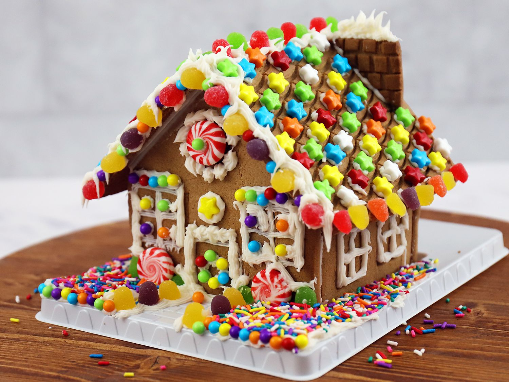

Top 5 Christmas Activities
1. Visiting The City
This christmas tradition is great for you and your family to visit the city and do all of the holiday activities that it provides. (i.e Visity the tree and ice skating)
2. Watching A Christmas Movie

Watching a christmas movie with your frinds and family all togethetr is a great, relaxing and festive activity.
3. Making A Gingerbread House
This christmas tradition is great for people of all ages. Making a house out of gingerbread, friosting and other candy is a tradition in many families.
4. Decorating The Christmas tree
Decorating the Christmas tree is one of the most common Christams traditions. Families and friends will decorate a tree together and hang ortaments that sometimes have a meaning to the person or are just decoration.
5. Building A Snowman
Buolding a snowman is a great and fun tradition especially if there is alot of snow.